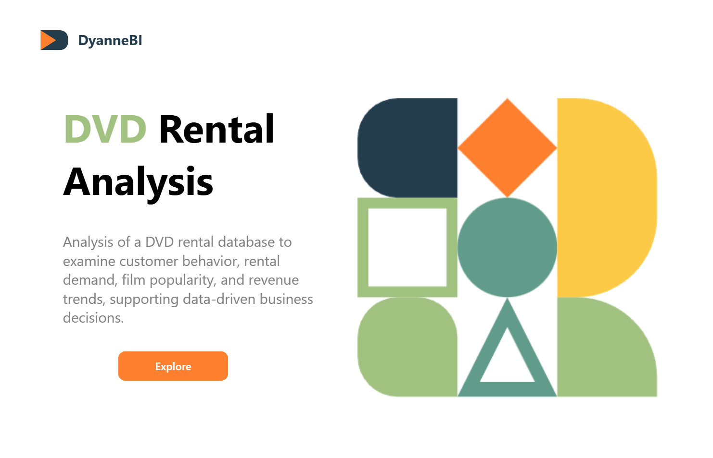

01 / Retail
DVD Rental Analysis
Problem
A DVD rental business's raw relational database held the answers to which films and customer segments actually drove revenue — but only if someone was willing to query for them.
Approach
Wrote SQL directly against the PostgreSQL schema to examine customer behavior, rental demand, and film popularity, joining across customers, rentals, and inventory tables to trace revenue back to its source.
Result
A clear, query-backed picture of what was actually driving rental revenue — the foundation for any pricing or inventory decision that followed.
